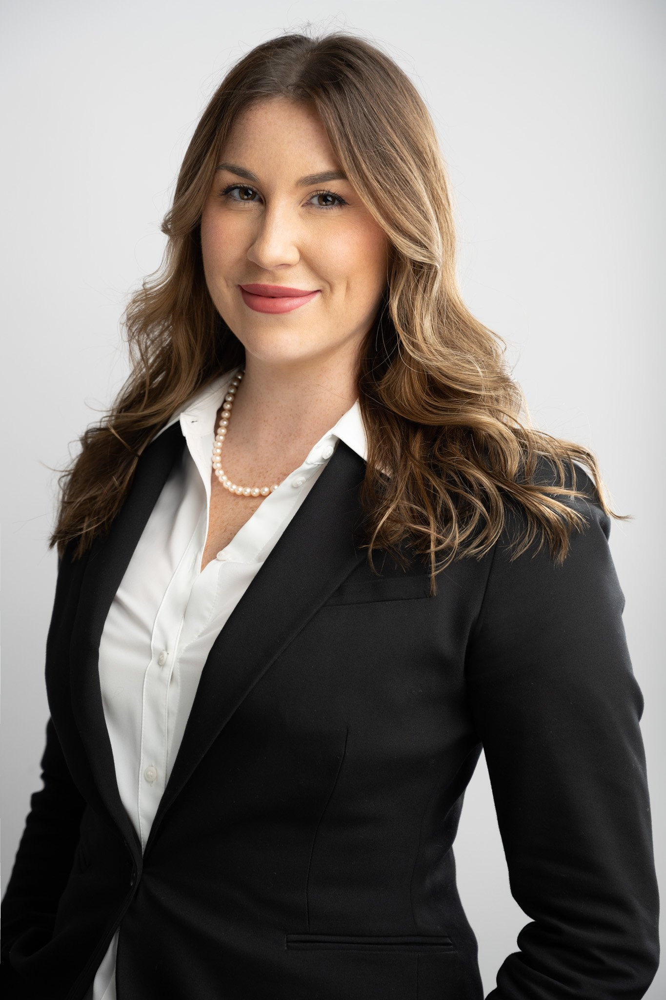

Amelia Monroe - Fashion Designer & Creator
Contact Information
Address: 758 Madison St, Harrisonburg, VA 22802
Phone: 571-830-4426
Email: Ameliamonroe@gmail.com

Skills and Specialties
- Fashion Sketching
- Fabric Selection
- Trend Analysis
- Pattern Making
- Adobe Creative Suite (Photoshop, Illustrator)
- Team Collaboration
- Color Theory
- Fashion CAD Software
Professional Experience
Senior Fashion Designer: Louis Vuitton
Paris, France 2021-Present
Louis Vuitton Official Site
- Lead the design team in creating seasonal collections that align with brand aesthetics and market trends.
- Collaborate with cross-functional teams, including production and marketing to ensure seamless product development and launch.
- Conduct trend research and analysis to stay ahead of industry trends and integrate them into designs.
Lead Couturier: Gucci
Milan, Italy
2018-2020
Gucci Official Site
- Conceptualized and executed couture designs for Gucci, contributing to the brand expansion into luxury couture market.
- Collaborated closely with the creative director to develop exclusive designs for celebrity clients and high-profile events.
Fashion Designer: Chanel
Paris, France
2016-2018
Chanel Official Site
- Played a key role in designing ready-to-wear collections, maintaining Chanel's legacy of timeless elegance and sophistication.
- Implemented innovative design techniques and materials, contributing to the brand's modernization while respecting its classic heritage
Education
Bachelor of Fine Arts in Fashion
London College of Fashion, London, United Kingdom 2016
Certifications
Couture Design Certification: College of Fashion, 2015 ©